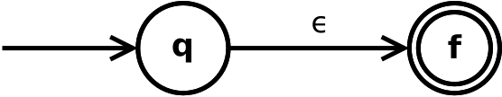
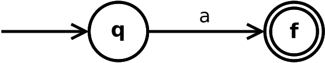
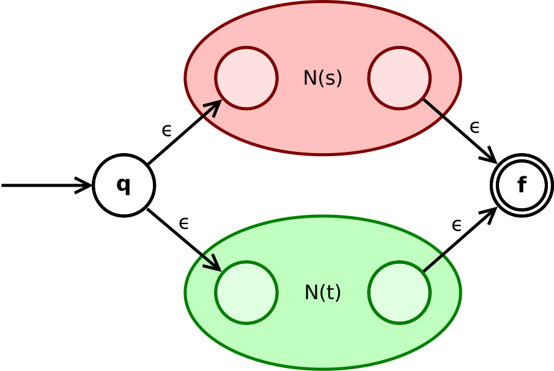
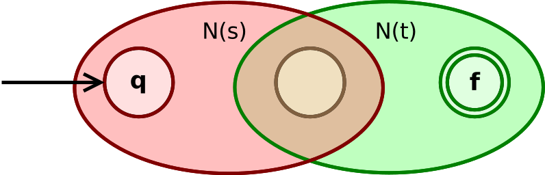
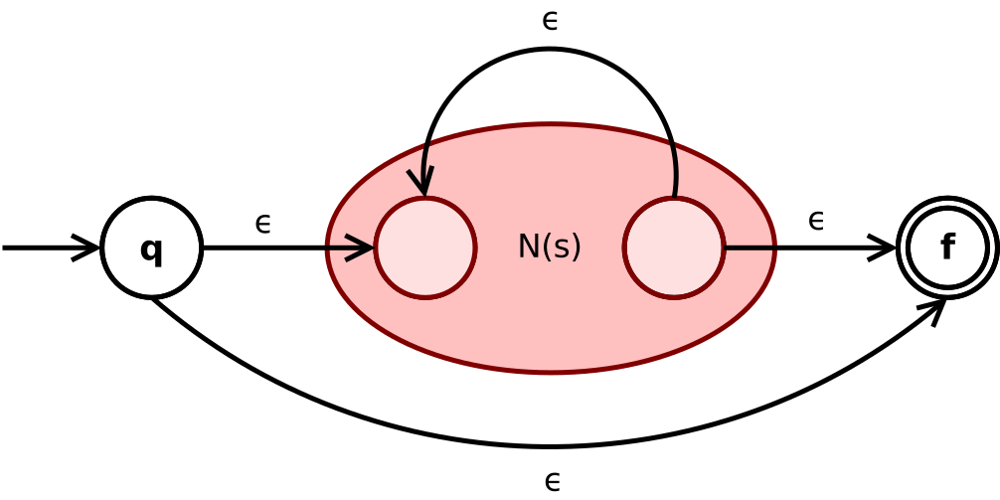

data Token = Number Int | Add | Minus | LParen | RParen deriving (Eq, Show)
type LexerState = Maybe ([Token], String)
updateState :: LexerState -> LexerState updateState Nothing = Nothing updateState ac@(Just (ts, ns)) | all isDigit ns && not (null ns) = let v = read (reverse ns) in Just (Number v : ts, []) | otherwise =ac
lexer' :: LexerState -> String -> LexerState lexer' ac [] = updateState ac lexer' Nothing _ = Nothing lexer' ac@(Just (ts, ns)) (c:cs) | isSpace c = lexer' (updateState ac) cs | isDigit c = lexer' (Just (ts, c : ns)) cs | c == '(' = lexer' (Just (LParen : ts, ns)) cs | c == ')' = lexer' (Just (RParen : ts, ns)) cs | c == '+' = lexer' (Just (Add : ts, ns)) cs | c == '*' = lexer' (Just (Mult : ts, ns)) cs | otherwise = Nothing
lexer :: String -> Maybe [Token] lexer s = case lexer' (Just ([], "")) s of Nothing -> Nothing Just (ts, _) -> Just (reverse ts)





-- a: type for states -- b: type for alphabet symbols data DFA a b = DFA { start :: a , trans :: [((a,b), a)] , final :: [a] } deriving Show
delta :: (Eq a, Eq b) => DFA a b -> [b] -> Maybe a delta m s = foldl step (Just (start m)) s where step (Just e) a = lookup (e,a) (trans m) step Nothing _ = Nothing
data State = S0 | S1 deriving (Eq, Show) numberDFA :: DFA State Char numberDFA = DFA { start = S0 , trans = [((S0, c), S1) | c <- ['0'..'9']] ++ [((S1, c), S1) | c <- ['0'..'9']] , final = [S1] }
extract :: DFA State Char -> String -> (String, String) extract m s = go (start m) "" s where go _ token [] = (token, []) go e token (x : xs) | isSpace x = (token, x : xs) | otherwise = case lookup (e,x) (trans m) of Just e' -> go e' (token ++ [x]) xs Nothing -> (token, x : xs)
dfaLexer :: DFA State Char -> String -> [Token] dfaLexer m s = go s [] where go [] ac = reverse ac go (x : xs) ac | isSpace x = go xs ac | otherwise = let (token, rest) = extract m (x : xs) in go rest (if null token then ac else Number (read token) : ac)
$digit = 0-9
@number = $digit+
tokens :-
-- whitespace and comments
<0> $white+ ;
<0> "--" .* ;
-- other tokens
<0> @number {mkNumber}
<0> "(" {simpleToken TLParen}
<0> ")" {simpleToken TRParen}
<0> "+" {simpleToken TPlus}
<0> "*" {simpleToken TTimes}
$digit = 0-9
@number = $digit+
tokens :-
-- whitespace and comments
<0> $white+ ;
-- other tokens
<0> @number {mkNumber}
<0> "(" {simpleToken TLParen}
<0> ")" {simpleToken TRParen}
<0> "+" {simpleToken TPlus}
<0> "*" {simpleToken TTimes}
<0> "-" {simpleToken TMinus}
AlexInput -> Int64 -> Alex TokenAlexInputtype AlexInput = (AlexPosn, -- current position, Char, -- previous char ByteString, -- current input string Int64) -- bytes consumed so far
mkNumber :: AlexAction Token mkNumber (st, _, _, str) len = pure $ Token (position st) (TNumber $ read $ take len str)
simpleToken :: Lexeme -> AlexAction Token simpleToken lx (st, _, _, _) _ = return $ Token (position st) lx
lexer :: String -> Either String [Token] lexer s = runAlex s go where go = do output <- alexMonadScan if lexeme output == TEOF then pure [output] else (output :) <$> go
Alex/LexerExample.xalex LexerExample.x -o LexerExample.hs
%wrapper "monadUserState"
AlexUserState.data AlexUserState = AlexUserState { nestLevel :: Int -- comment nesting level }
alexInitUserState de tipo AlexUserState.alexInitUserState :: AlexUserState alexInitUserState = AlexUserState 0
get :: Alex AlexUserState get = Alex $ \s -> Right (s, alex_ust s) put :: AlexUserState -> Alex () put s' = Alex $ \s -> Right (s{alex_ust = s'}, ()) modify :: (AlexUserState -> AlexUserState) -> Alex () modify f = Alex $ \s -> Right (s{alex_ust = f (alex_ust s)}, ())
-- multi-line comment
<0> "\*" { nestComment `andBegin` state_comment }
<0> "*/" {\ _ _ -> alexError "Error! Unexpected close comment!" }
<state_comment> "\*" { nestComment }
<state_comment> "*/" { unnestComment }
<state_comment> . ;
<state_comment> \n ;